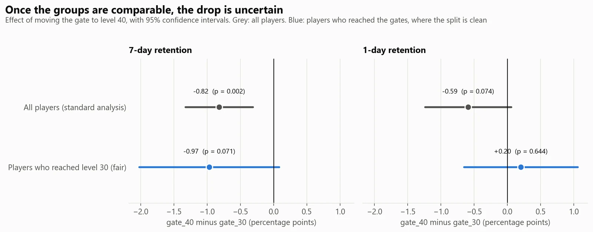
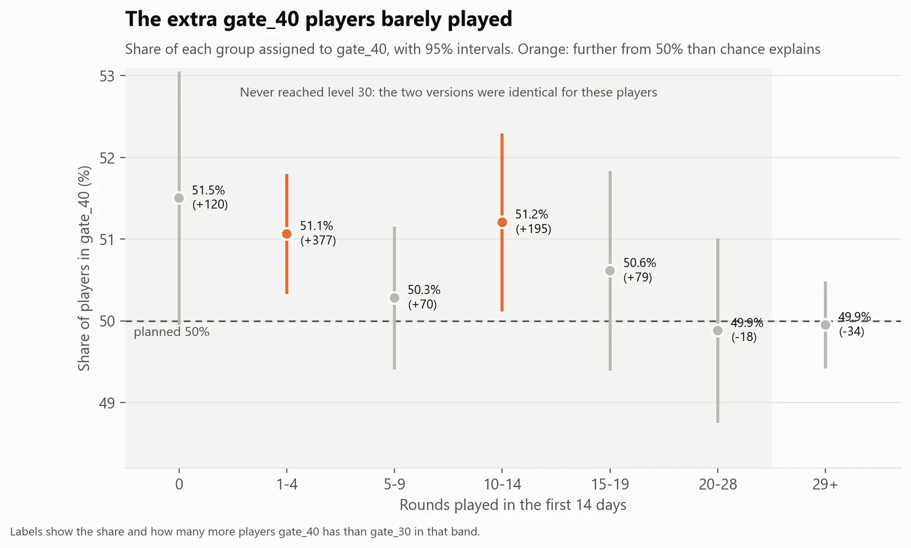
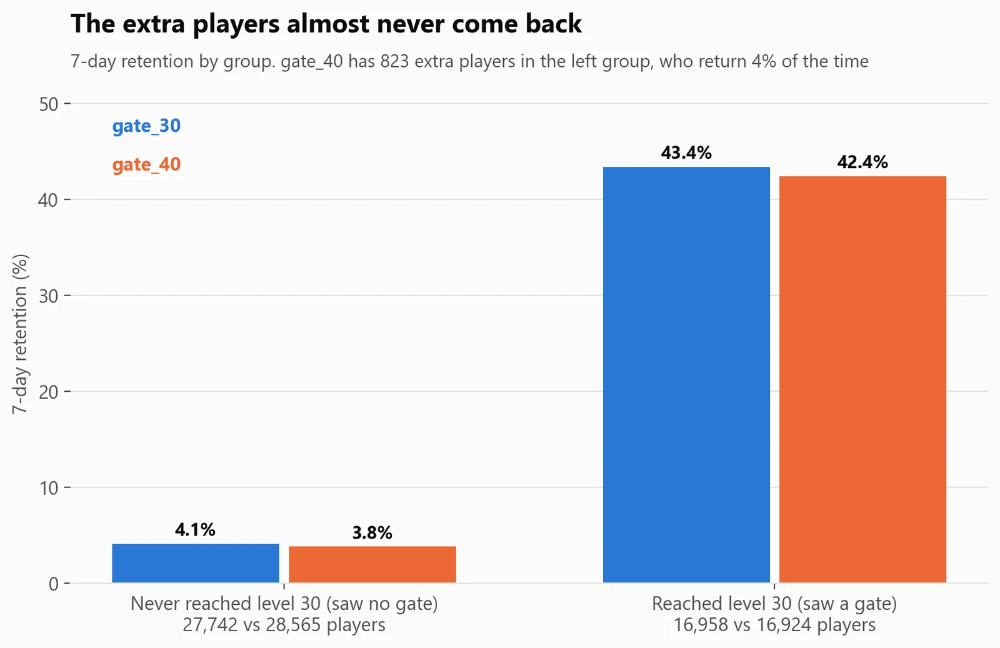
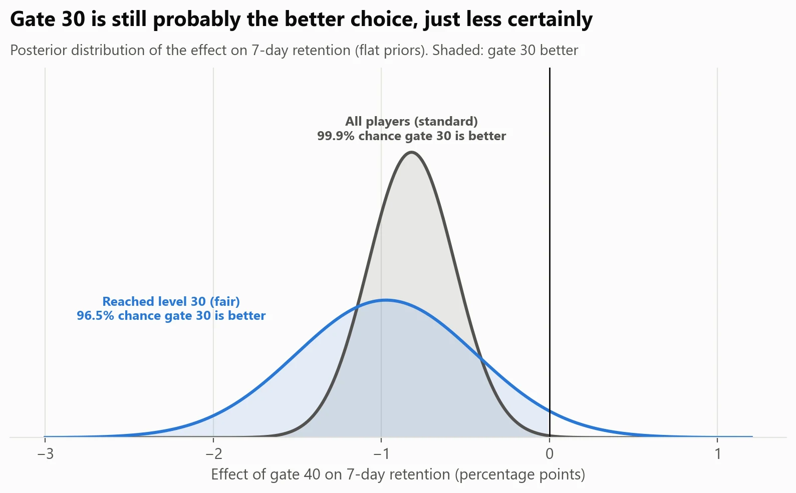
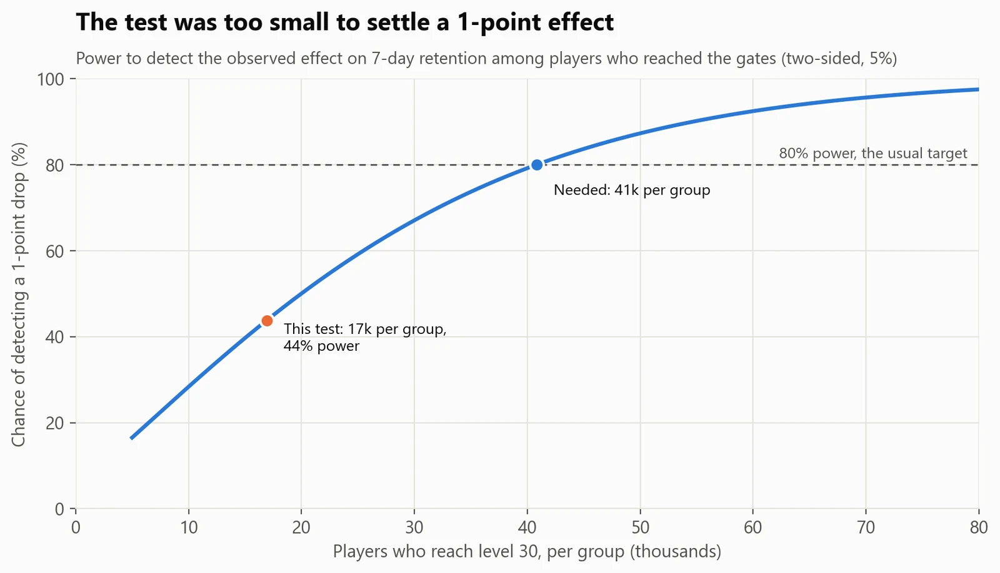

Work/PRJ-05/Experimentation · Mobile game
Cookie Cats: the broken split behind a famous A/B test
Keep it at 30, but the famous result is weaker than it looks. The usual analysis of this test finds that the later gate cuts 7-day retention by 0.8 points. But the random split was broken: the gate-40 group got about 800 extra players who barely played. Comparing only players who reached the gates, the effect is less than half as big across all players and no longer statistically clear.
- Data
- 90,189 players of Cookie Cats, randomly assigned to two versions
- Methods
- Sample-ratio check, A/A segment, z-tests, Bayesian analysis, power analysis
- Tools
- Python: scipy, statsmodels; SQL (DuckDB); unit tests
- Code
- github.com/BoredMongoose/ab-test-cookie-cats ↗
Should we move the game's first gate from level 30 to level 40?
Keep the gate at level 30, fix the assignment problem, and re-run with about 217,000 installs before making the change.
Overstatement of the harm to 7-day retention in the usual analysis (−0.82 vs −0.36 points), caused by the broken split.
01Results
Two answers to the same question.





02How I did it
From raw data to a decision.
- Checked the experiment before the results: a sample-ratio test showed the groups were too uneven for chance (p = 0.009).
- Found where the extra players were by splitting players by whether they could have seen a gate (at least 29 rounds played). That split is decided before any gate, so it's a fair A/A test inside the A/B test.
- Re-estimated the effect only among players who reached the gates, where the split is clean, then scaled it to all players.
- Wrote a small statistics toolkit (sample-ratio test, z-test, Bayesian comparison, power, Holm correction) with 13 unit tests against scipy and statsmodels. The tests caught a missing factor of 2 in my first sample-size formula.
03What could make this wrong
The limits, said out loud.
- 01There's no revenue data: gate 40 might earn more from players who pay to skip it.
- 02The cause of the broken split is unknown. The fix assumes it only affected players who never reached a gate, which the even split above level 30 supports.
- 03One game at one point in time.
04What I learned
- 01Check the experiment before the results. A sample-ratio test takes seconds, and here it changed the answer.
- 02Splitting by something the treatment can't affect (players who never reached a gate) is a clean way to find where a test went wrong.
- 03A p-value of 0.07 isn't 'no effect'. For a product decision, the probability that one option is better (96% here) and the cost of being wrong are more useful.
05What I'd do next
- 01Trace the extra players through install source, device, app version and the assignment logs.
- 02Add an automatic sample-ratio alert to the experiment dashboard, so a broken split is caught on day one.
- 03Re-run with about 41,000 players per group who reach level 30, with in-app revenue as a guardrail metric.
- 04Check whether the effect differs for players who reach the gate quickly or slowly.